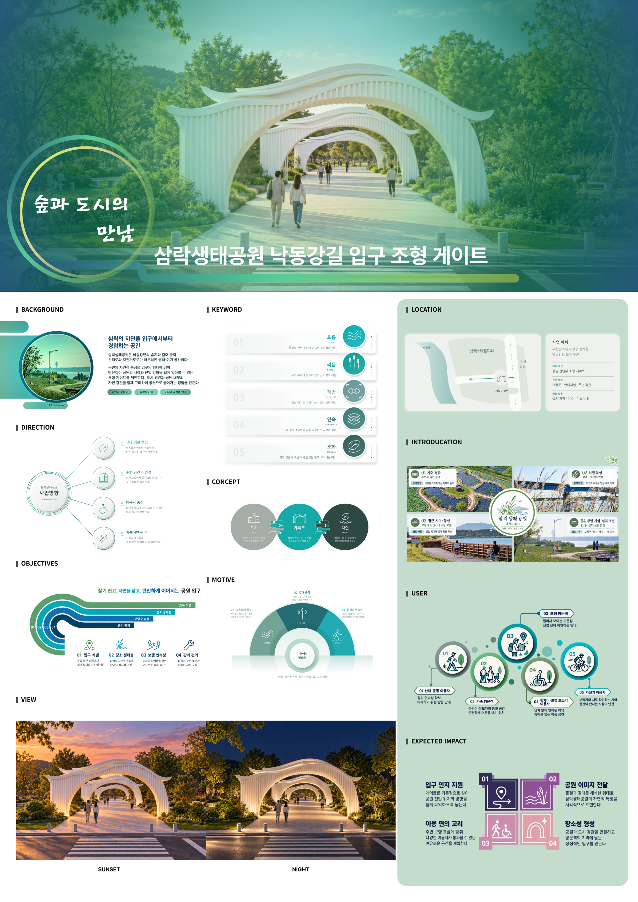

흐름
부드럽게 오르내리는 지붕선
 현가현GAHYEON FORM
현가현GAHYEON FORMSPATIAL DESIGN
삼락생태공원 낙동강길 입구 조형 게이트
도시의 길에서 공원의 풍경으로 이어지는 첫 장면.
BACKGROUND
삼락생태공원의 낙동강길 진입부를 대상으로, 도시의 도로와 자연의 풍경을 연결하는 조형 게이트를 제안했습니다. 공원 안의 풍부한 자연이 입구에서도 읽히도록 만들고, 방문객이 공원의 시작을 알아볼 수 있는 시각적 기준을 두는 작업입니다.
산책과 운동을 위해 방문하는 사람, 가족 단위 방문객, 자전거 이용자와 이동 보조기구 이용자처럼 서로 다른 이용 상황을 함께 고려했습니다. 특정 행동을 강요하는 문보다, 시야를 열어 두고 각자의 속도로 들어갈 수 있는 입구를 지향합니다.
CONCEPT
낙동강의 물결을 떠올리게 하는 지붕 곡선과 수직 부재의 반복을 함께 사용했습니다. 하나의 거대한 조형물로 시선을 막기보다, 여러 개의 게이트가 이어지며 깊이감을 만드는 구성을 선택했습니다.
수평으로 흐르는 선과 수직으로 서 있는 구조가 대비되면서도 하나의 실루엣으로 읽힙니다. 흰색 구조물은 주변 녹지와 구분되는 입구의 표지가 되고, 열린 가운데 공간은 뒤쪽 풍경을 계속 보여 줍니다.
패널의 주간·석양·야간 장면은 자연광과 조명에 따라 달라지는 공간의 인상을 보여 줍니다. 같은 구조가 시간대마다 다른 풍경으로 읽히도록 계획했습니다.
부드럽게 오르내리는 지붕선
수직 부재와 게이트의 반복
진입 방향을 보여 주는 시야

SPATIAL EXPERIENCE
FORM DEVELOPMENT
RHINO MODELING

게이트의 지붕 곡선과 수직 요소를 모델링하고, 여러 구조가 앞뒤로 겹쳐 보이는 관계를 검토했습니다. 정면의 실루엣뿐 아니라 길을 걸으며 변화하는 시점도 디자인의 일부로 보았습니다.
렌더링은 자연광과 주변 식재 속에서 구조물이 어떻게 보이는지 보여 줍니다. 전시 모형은 게이트·보행로·녹지·휴게 공간의 배치 관계를 한눈에 이해하도록 구성했습니다.
NEXT QUESTIONS
이 작품은 공원 입구의 경험을 제시한 공간디자인 콘셉트입니다. 실제 적용 단계에서는 구조 안전성, 배수, 조명 유지관리, 보행과 자전거 동선의 관계를 별도로 검토해야 합니다.
이동 보조기구 이용자를 위한 유효 통과 폭과 바닥의 연속성 역시 실측과 관련 기준에 따라 확인할 과제입니다. 완성된 장면뿐 아니라, 누구나 편안하게 사용하는 공간으로 이어지는 조건을 함께 생각합니다.
EXHIBITION MOCKUP

PROJECT BOARD
대상지와 이용자, 디자인 방향, 모티브, 기대 효과를 정리했습니다. 패널 하단에서 석양과 야간의 공간 이미지를 함께 확인할 수 있습니다.
작품의 전체 구성과 세부 내용을 담은 패널입니다. 원본을 새 창에서 열어 확대해 볼 수 있습니다.
패널 원본 크게 보기 ↗
LET'S TALK ABOUT THE WORK